Question 1
On a circle of radius 2, center (0, 0), find the x and y coordinates at angle 270 degrees (or 3π/2 in radian measure).
Select one:
(2,
–2)
(2,
0)
(0,
–2)
(0, 2)
(2, 2)
Question 2
Answer
Question 3
If
an ant is 100 feet away from a tree growing straight up, and the ant has to
look up at an angle of 68 degrees to see the top of the tree, how tall is the
tree? Select the closest answer.
Select one:
200
feet
140
feet
80
feet
20
feet
10
feet
Question 4
Solve the system: x + y + z = 3, 2x – y + 3z = 3, x - 2y + 3z = 0
Select one:
(1, 1, 1)
(1, 2, 0)
(2, 1, 0)
No solution
None of these
Question 5
Question 6

Answer
Question 7
Answer


Question 8
Answer
Question 9
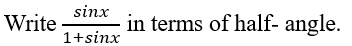
Answer
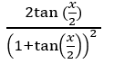
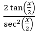
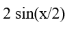
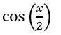
Question 10
") ?
?
Answer
Question 11
What, approximately, is log 2 32? Choose the closest answer.
Select one:
1
2
3
5
None of these
Question 12
The horizontal asymptotes of
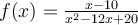
are:
Answer
Question 13
Solve the system (domain is all real numbers): y = x
3
+ 5, y = x + 5
Select one:
(0, 5), (0, 6), (– 1, 4)
(0, 5), (1, 6), (0, 4)
(0, 5), (1, 6), (– 1, 4)
No solution
None of these
Question 14
What is the vertex of f(x) = x 2 + 3x + 2?
Select one:
7
(0, 2)
(-3/2, -1/4)
-3/2
None of these
Question 15
What
is the equation of the line passing through (1, –4) and parallel to y = –x + 1?
Select one:
–x
+ y + 3 = 0
x –
y + 3 = 0
x +
y – 3 = 0
x +
y + 3 = 0
None of these
Question 16
Solve the system: y = |x|, y = 2x + 3
Select one:
(-1, 1)
(1, 1)
(2, 2)
No solution
None of these
Question 17
Answer
Question 18
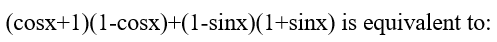
Answer
0
-1
1
2
Question 19
If an ant is 50 feet away from a tree growing straight up, and the ant has to look up at an angle of 70 degrees to see the top of the tree, how tall is the tree? Select the closest answer.
Select one:
20 feet
50 feet
1,400 feet
140 feet
1,000 feet
Question 20
Solve the system: 2x – y = 4, x + y = 5
Select one:
x = 3
(2, 3)
(3, 2)
There is no solution
None of these
Question 21
Solve the system: y = x
4
+ 1, y = x
2
+ 1
Select one:
(0, –1), (–1, 2), (1, –2)
(0, –1), (–1, 2), (1, 2)
(0, 1), (–1, 2), (1, 2)
No solution
None of these
Question 22
Solve the system: 2x + 3y = 7, 3x - 5y = 1
Select one:
(2, 1)
(1, 2)
(0, 0)
There is no solution
None of these
Question 23
Answer
Question 24
Solve
for x: (1/3)
x
= 81
Select one:
4
–2
3
–4
None of these
Question 25
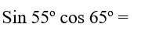
Answer
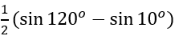
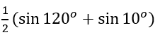
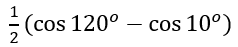
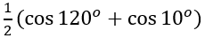
Question 26
What is the equation of a line through (-1, 4) and (-2, 7)?
Select one:
y = 3x + 1
y = -3x + 1
y = -3x + 7
y = 3x + 7
None of these
Question 27
On a circle of radius 4 and center (0, 0), find the x and y coordinates at angle 180 degrees (or π in radian measure).
Select one:
(0, 4)
(4, 0)
(4, 4)
(-4, 0)
(2, 2)
Question 28
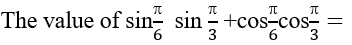
Answer
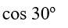
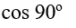
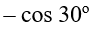

Question 29
Solve the system: y = x
2
+ 11, y = 2x
2
+ 2
Select one:
(–3, –20), (3, –20)
(3, –20), (3, 20)
(–3, –20), (3, 20)
(–3, 20), (3, 20)
None of these
Question 30
Answer
Question 31
Answer
Question 32
Solve the system: y = x 2 – 7, y = x - 7
Select one:
x = 0
(0, -1)
(0, -7)
(0, -7) and (1, -6)
None of these
Question 33
The graph of y = 4sin (3x + 2) + 1 has amplitude of:
Select one:
0
1
2
3
4
Question 34
Answer
Question 35
What
is the vertex of f(x) = x
2
+ 4x + 2?
Select one:
(2,
2)
(–
2, – 2)
(–
2, 2)
(2, – 2)
None of these
Question 36
Solve the system: y = x 2 + 7, y = 4x + 3
Select one:
(0, 7)
(0, 7) and (0, 3)
(2, 11)
No solution
None of these
Question 37
Solve the system: y = e
3x
, and y = 1/e.
Select one:
(1/3, e)
(1/3, e
-1
)
(–1/3, e
-1
)
No solution
None of these
Question 38
What is the period of y = 3cos ( 4x + π/2) + 5?
Select one:
π/4
π/2
π
2π
–π
Question 39

Answer
Question 40
The horizontal asymptotes of
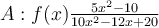
are:
Answer